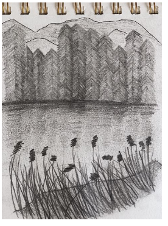
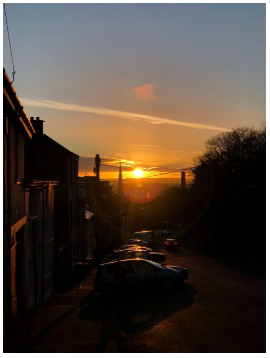
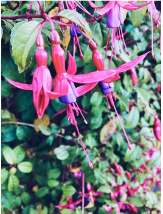

Drawing
One of my main details is try to crceate my one perspective about the flowers and nature that I see. In that case I was around Cork, the city where I have been living in the last time.
Sunset
One of my main details is try to crceate my one perspective about the flowers and nature that I see. In that case I was around Cork, the city where I have been living in the last time.
Flowers(My Favourites)
One of my main details is try to crceate my one perspective about the flowers and nature that I see. In that case I was around Cork, the city where I have been living in the last time.